Muscle Workouts
"It is a shame for a man to grow old without seeing the beauty and strength of which his body is capable" - Socrates
This page will help you learn more about workouts and which ones to do to target particular muscles.
Dumbbell Bench Press
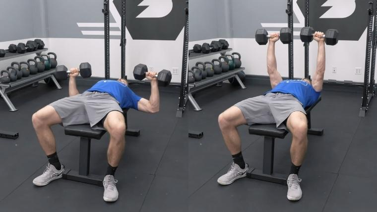Grip each dumbbell firmly, and then squeeze your shoulder blades together. Kick one knee up to drive a dumbbell to your shoulder. Then, drive the other knee up. As you drive the last dumbbell up, lay back down on the bench. You should start with both dumbbells over your chest, with your arms fully extended.
Squeeze your shoulder blades together and ensure your feet are actively pressing into the floor.
Slowly lower the dumbbells down toward your chest. The weights should fall both down and out to the sides. Lower until your upper arm is parallel (or lower) to the floor, or the weights themselves come to chest height. Keep your elbows under your wrists at all times.
Once your back is tight, and the weight is sitting at chest level, drive the dumbbells up and inward. Your hands should end up back on top of your shoulders.
Overhead Tricep Extension
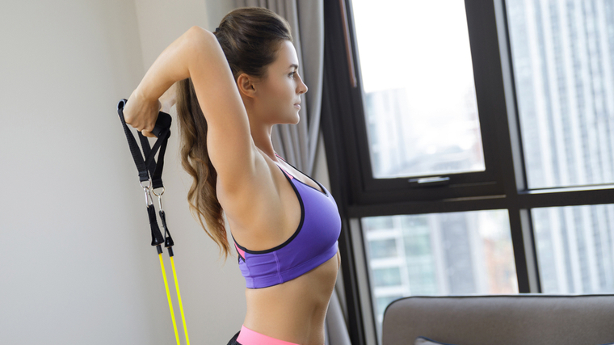Set up the pulley at a low position. Grab the rope and face away from the cable stack. The cable itself should run from the low starting point to the overhead position. Extend your arms overhead. Keep your elbows straight.
Allow your elbows to bend so that your hands go behind your head. Your elbows should be facing forward and upwards.
Let your hands lower with control. Once you feel a stretch in your triceps, fully extend your elbows by reaching the hands upwards and overhead.
Chest Flies
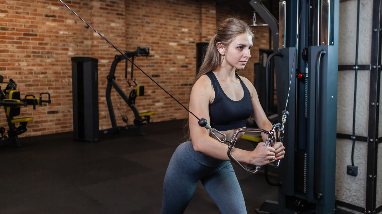The standard cable crossover is performed from a standing position. Therefore, you should adjust the height of the cable pulleys such that they’re roughly around shoulder level or slightly above.
Once you’ve got the handles at the proper height, grab one in each hand, take a small step out, and tilt your torso forward slightly as if you were going to bow. Your arm should align with the cable itself.
From the starting position, draw your arms across your body toward your midline with your elbows loose and mostly straight. Your hands should criss-cross each other at roughly sternum-height at the end of the repetition.
Dumbbell Skull Crusher
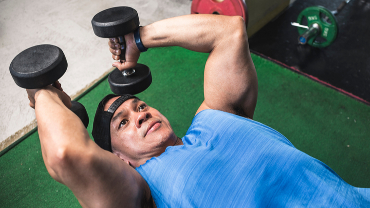Grab a pair of dumbbells, one in each hand. Lie down on your back on a bench. Press the weights above you so that they are over your face rather than directly above your shoulders.
Without letting your elbows flare outwards, bend them to lower your dumbbells to the sides of your face or to the outer edges of your forehead. The only joint that should move is your elbows. Lower the weights as low as you can go. The lower you go, the more stretch you give your triceps.
Extend your elbows. Push your hands upwards to the start position. Avoid dropping your elbows so you don’t turn it into a chest press.
Calf Raise
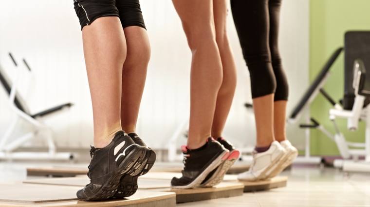Start by standing on the edge of a stable surface such as a step, block of wood, or anything that is a few inches tall. You want to have your heels able to hang off the edge to allow you to go into a deep calf stretch by flexing your ankle.
Stand upright with your foot on the edge of the step or surface, and go into a deep calf stretch while holding a weight. Keep your knee extended. Push through your toes to lift the heels upwards, going into full plantar flexion of the ankle joint. Hold yourself in the top position for a second, focusing on strong muscle contraction, then lower yourself slowly under control.
Bulgarian Split Squat
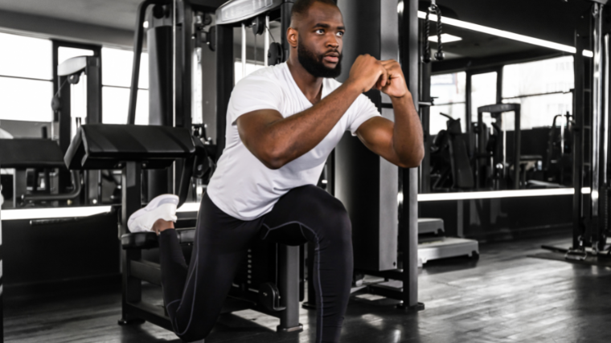Stand a few feet in front of whatever surface you’re using to rest your foot on. From here, lift your non-working leg and rest it on the bench or box. You can hold your foot up on your toes, or let it rest flat.
Then, reach down with your arm to grab ahold of the weight (if you’re using one). Holding the weight on the same side as your working leg will generally be a bit easier than holding it in the opposite arm.
Once you’re split and stabilized, hold the weight loosely in your hand. Brace your core and then sink down and slightly backward into a squat. Descend as far as your mobility allows without pain or loss of balance.
Chest-Supported Row
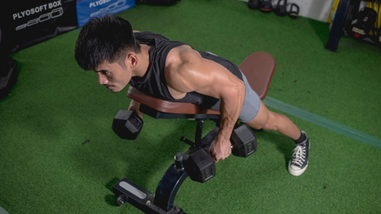Set your bench to a 45 degree incline. Grab your dumbbells and lie chest-down on the bench. Hold your weights by your sides with your palms facing each other. Press your toes into the floor and squeeze your glutes and abs to begin building tension.
Initiate the chest-supported row by retracting your shoulder blades and then follow through by pulling your elbows up toward the ceiling. Keep your upper arm tucked tight to your torso the whole way.
After pausing momentarily, slowly lower your weights back towards the floor, keeping your elbows in. Maintain tension by keeping your shoulders down and abs engaged. Stay engaged at the bottom of the lift.
Lat Pulldown
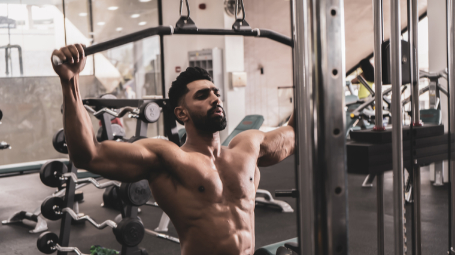Start by taking a medium-width, double overhead grip on the bar, a few inches outside the shoulders. Make sure that the bar itself is resting in the middle of the palm, not in the fingertips. You can choose a thumbless grip or you can wrap your thumb around the bar.
Sit down, making sure that your arms are fully extended and under load when seated to maximize the stretch on the lats. Your feet should be flat on the floor and your thighs situated snugly underneath the leg anchoring pad.
Sit up as tall as you can, feeling the stretch on the lats and triceps. With your chest up and back arched, pull the bar down to the middle to lower chest (sternum). As you pull down, try to minimize leaning back.
Once you have touched your sternum, let the arms go back overhead with control. Make sure to feel a big stretch and tension on the lats. Pause in this fully-stretched position, and repeat steps 1-3 for more repetitions.
Hammer Curl
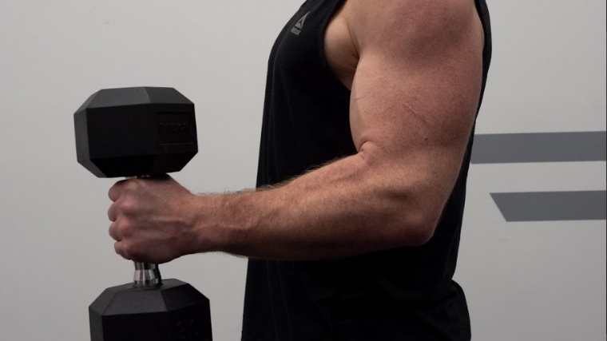Stand tall while holding a dumbbell in each hand. Keep your wrists tight, and squeeze your shoulder blades together so your shoulders lock into place — your biceps should be the only muscle engaged.
With the shoulders set, squeeze the handles and maintain rigidity in the wrist — all you want to do is flex and extend your elbow.
Don’t let the elbows swing too far forward or too far back. Otherwise, you risk losing tension in your biceps. The arc of the dumbbell should create almost a half-circle from the front of your hip to the front of your deltoid.
Lift the dumbbell above 90 degrees at the elbow where the thumb is at shoulder height. Once you have reached the top of the hammer curl, keep squeezing the biceps. Maintaining a controlled tempo throughout the rep can help improve exercise technique and increase the tension placed on the target muscle(s).
While keeping the elbow under the shoulder or slightly in front of the shoulder, return the dumbbells to the initial starting position under a slow and controlled tempo.
Preacher Curl
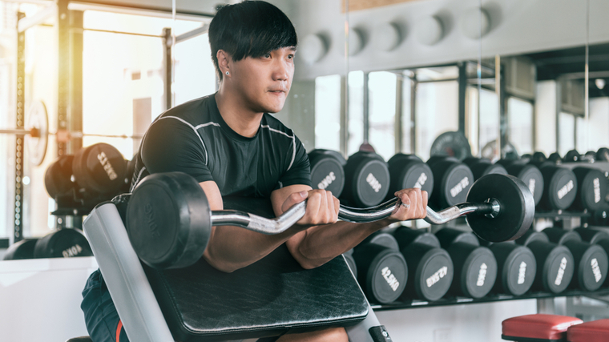Sit down on the preacher curl bench. Adjust the seat height so your upper arms and chest are in contact with the pad. Grip the curl bar with an underhand grip.
Tuck your chin. Fully extend your elbows. Maintain a neutral wrist position with your preferred grip. Curl the bar by contracting your biceps while bending your elbows. Lift the curl bar to your shoulders. Finish by squeezing your biceps.
Slowly straighten your elbows to lower the curl bar to the starting position. Reset and repeat.
Dumbbell Shoulder Press
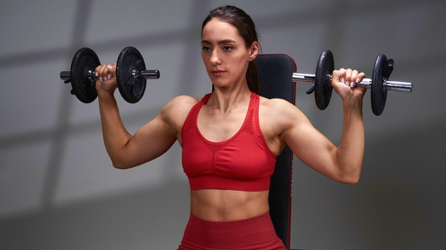After finding some dumbbells and a stationary bench, get into the proper starting position. Take a seat and push your feet into the ground. Then, with a pronated grip (palms facing outward), bring the dumbbells to their starting position just outside of your shoulders.
Before you start, brace your core and depress your scapula. Then press the weight above your head. At the top of the dumbbell shoulder press, the dumbbells should be directly above your wrists, your wrists above your elbows, and your elbows above your shoulders.
Bring the dumbbells back down to their starting position by bending your elbows and reversing the pressing movement. Be sure to complete a full repetition by bringing the weight back to your starting position.
Upright Row
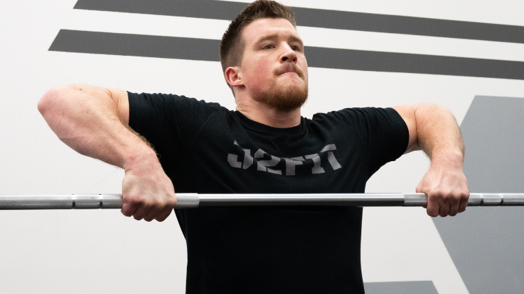The upright row is typically practiced with a shoulder-width grip, but you can adjust it slightly to bias certain muscles over others. Grab the bar close to target your shoulders, and widen it out if you want to emphasize your traps.
Stand with the barbell held at your waist. Keep your arms straight and relaxed, and your shoulders tight and pinched back. Point your knuckles down towards the ground. Squeeze your quads and glutes to maintain rigid legs for the duration of the set
While keeping your knuckles pointed down to the ground, bend your elbows and pull them straight up. Retain the barbell close to your torso and pull until the bar reaches roughly chest height.